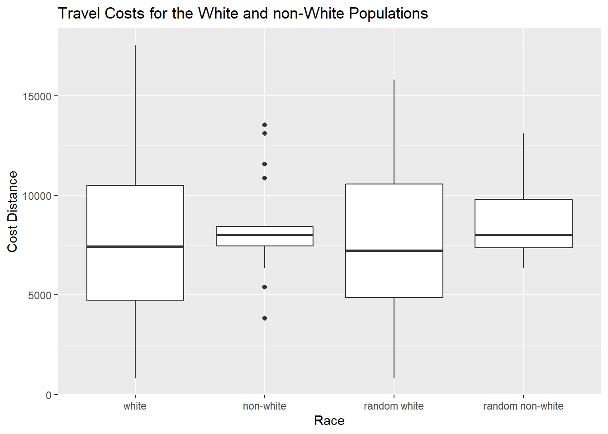
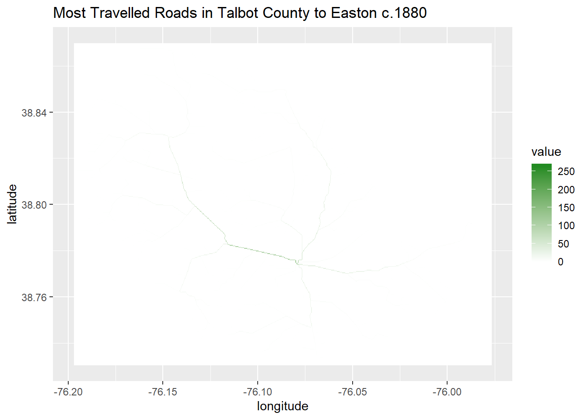

Differences in Travel Costs in Talbot County, Md between the White and African American Populations c. 1880
Joe Prego
Introduction
This project will examine the differences in spatial distance between the African American and White populations of Talbot County, Maryland during the second half of the 19th century based upon the population listed in the Lake, Griffing and Stevenson 1877 map, “An illustrated atlas of Talbot and Dorchester Counties, Maryland” and the census data from Talbot County in 1880. The Easton Market, located in Easton within greater Talbot County, was the main place to get economic resources during this period. This project will compare the travel distances between the African American and White populations to this market to test for differences in their costs of travel to obtain economic resources. In doing so, it will ask the question, did the African American and White populations of Talbot County, Maryland have similar average costs of travel from their dwellings to the Easton town market to obtain economic resources during the later half of the 19th century?
Materials and methods
The code below will create the raster object that will be used to do the travel cost calculations. It will be a representation of Talbot county with different values assigned to roads, land, and water. The point shapefile will be necessary to get to “to” and “from” points when running the calculations. These steps must be taken first so that the mathematical tests can be applied to the region.
The gdistance package will be used to generate the least cost paths to the Easton town market for four different subsections of the entire population: the African American population, the White population, a random sample of the African American population, and a random sample of the White population. This will allow for the comparison of the travel costs for the African American and the White populations, which is shown in Test No 1 below. The comparison will be between the total travel costs value generated for each of the populations. In gdistance, this will be done by using the transition object that was created using the raster package, which importantly contains the values for moving from cell to cell. The values will coordinate to three different categories, with a small value representing roads, a high value representing non-roads, and a higher value representing water. This means, when the test is run, each time it will travel on the least cost path, therefore along the roads, to get from individual houses to the town market.
Another function of the gdistance package is that it can show what those least cost paths are. This test is shown in Test No 2 below. The purpose of this test is that when run on every house in the county, it will show which roads were travelled most often when travelling to the town market in Easton.
For analysis, the ggplot package was used. The results from the gdistance travel cost tests are shown in the boxplots below. This allows for easy comparison between the different samples of the dataset, and is accompanied by a table with the numeric results as well.
These packages need to be installed:
library(maptools)
library(sf)
library(raster)
library(rgdal)
library(methods)
library(ggplot2)
library(rasterVis)
library(tidyverse)
library(gdistance)
library(rgeos)
library(dplyr)
library(data.table)
library(foreach)
library(knitr)
library(kableExtra)To create the project raster necessary for analysis, the shapefiles of the houses and roads must be read in along with the elevation raster.
#This is the road shapefile from the historic map
roads<-read_sf("_data/1877_roads_talbot.shp")%>%
st_transform(crs=4326)
#This is the houses shapefile from the historic map and Census Data
houses<-read_sf("_data/1877_houses_talbot.shp")%>%
st_transform(crs=4326)
#converting to spatial
houses_sp <- as_Spatial(houses)
#This is the elevation raster of the area, cropped to the extent of the roads shapefile
elev_crop<-raster("https://github.com/geo511-2019/2019-geo511-project-jpreg/raw/master/_data/cropped_elevation_raster_talbot.tif")Creation of the Project Raster
The code below will create the project raster. This raster combines the elevation tif and road shapefile into a single raster, and assigns values for the land type. Road is given a value of 1, land is given a value of 4, and water is given a value of 10. These values have been chosen so that travel will take place along the roadways. With this information, the gdistance package will eventually be able to calculate travel costs from the houses to the town market in Easton.
#function for values of roads over water: bridges
bridges <- function(x) ifelse (x==13 | x==6 | x==7, 1, x)
#This assigns the value for water using the elevation data
water=(elev_crop<0.001)*6
#Turning the Roads Shapefile into Raster Format
roads_raster <- rasterize(roads, water, field=1, background=4)
#Assigning different values to the land cover types
Land_Cover_Guide = c(
'water (10)'=10,
'roads (1)' =1,
'land (4)' =4)
lcd=data.frame(
ID=Land_Cover_Guide,
landcover=names(Land_Cover_Guide),
col=c("cadetblue", "peachpuff2", gray(.5)),
stringsAsFactors = F)
talbot_r <- water+roads_raster
talbot_r2 <- calc(talbot_r, fun=bridges)
talbot_rf=as.factor(talbot_r2)
levels(talbot_rf)=left_join(levels(talbot_rf)[[1]], lcd)
#plot of the raster (talbot_r2 object)
roads_water_plot<-gplot(talbot_rf, maxpixels=1e6) +
geom_raster(mapping=aes(fill=as.factor(value))) +
scale_fill_manual(values=levels(talbot_rf)[[1]]$col,
labels=levels(talbot_rf)[[1]]$landcover,
name="Landcover Type")+
coord_cartesian() +
xlab("longitude") +
ylab("latitude") +
ggtitle("Talbot County Project Raster")
roads_water_plot
Test No 1: Travel Cost Distances
The gdistance package calculates the travel costs when going from a start point in space to an end point in space. To do this, the package requires a base raster and a transition object. The base layer holds the values for each cell, and the transition object determines how permeable each cell is. In this way, the package relies on graph theory to determine costs.
Mathematically, this test will use Dijkstra’s algorithm to run the calculations. Essentially, this algorithm adds up the values as you travel along the least cost path from point A to point B. To determine the differences in travel costs between the White and non-White populations, the houses shapefile needs to be subdivided by race, so that there is a shapefile for the white houses and the non-white houses. The transition object is simply 1/conductance, which is 1 over our project raster (as a function: talbot_rf).
The point of the market has been denoted as 265 in the houses shapefile. Therefore gdistance’s costDistance function will calculate the distance from each shapefile to that point. The result is the total travel cost for all houses of the shapefile to the market. This test will determine the cost distances of four different subsets: the white population, the non-white population, a random sample of the white population (~40%, n=70), and a random sample of the non-white population (~40%, n=7).
The code below shows this process:
#filtering houses to create White population table and SpatialPointsDataFrame: houses_w, houses_w_sp
houses_w<-houses%>%
filter(race == "White")
houses_w_sp<-as_Spatial(houses_w)
#filtering houses to create Non-White and White population table and SpatialPointsDataFrame: houses_nw, houses_nw_sp
houses_nw<-houses%>%
filter(race == c("Black", "Mulatto"))
houses_nw_sp<-as_Spatial(houses_nw)
#travel cost function
trCost <- transition(1/talbot_rf, transitionFunction = mean, directions=8, symm=F)
trCost <- geoCorrection(trCost, type="c")
#distance measures to white population
dist_w <- costDistance(trCost, houses_w_sp, houses_sp[265,])
dist_w_df <- data.frame(dist_w)
#distance measures to non-white population
dist_nw <- costDistance(trCost, houses_nw_sp, houses_sp[265,])
dist_nw_df <-data.frame(dist_nw)
#distance measures to random sample of white population
dist_w_dt<- data.table(dist_w)
randw1<-dist_w_dt[sample(.N, 70)]
#distance measures to random sample of non-White population
dist_nw_dt <- data.table(dist_nw)
randnw1<-dist_nw_dt[sample(.N, 7)]Results of Test No 1
The travel cost distances for the white, non-white, random white, and random non-white are shown below, along with the code used to create them.
#combining all of the samples to display together
data=bind_rows(
data.frame(cost_distance=randnw1$V1, race="random non-white"),
data.frame(cost_distance=randw1$V1, race="random white"),
data.frame(cost_distance=dist_nw_dt$V1, race="non-white"),
data.frame(cost_distance=dist_w_dt$V1, race="white")) %>%
mutate(race = factor(race, levels=c("white", "non-white", "random white", "random non-white")))
boxplots_data<-data %>%
group_by(race)%>%
summarize(min=min(cost_distance), Q1=quantile(cost_distance, .25), median=median(cost_distance),
mean=mean(cost_distance), Q3=quantile(cost_distance, .75),
max=max(cost_distance))
data_boxplots <- ggplot(data=data, mapping = aes(y=cost_distance, x=race)) +
geom_boxplot() +
xlab(label="Race") +
ylab(label="Cost Distance")+
ggtitle("Travel Costs for the White and non-White Populations")
data_boxplots
kable(boxplots_data) %>%
kable_styling(bootstrap_options = c("striped", "hover", "condensed", "responsive"))| race | min | Q1 | median | mean | Q3 | max |
|---|---|---|---|---|---|---|
| white | 825.6843 | 4743.947 | 7444.012 | 7848.729 | 10509.536 | 17560.34 |
| non-white | 3821.4865 | 7457.759 | 8034.300 | 8451.805 | 8434.278 | 13539.12 |
| random white | 1281.8834 | 4858.558 | 7482.435 | 7841.323 | 10196.863 | 16454.79 |
| random non-white | 3821.4865 | 6690.884 | 7740.809 | 7764.442 | 8155.370 | 13096.29 |
Test No 2: Most Travelled Roads
Another function of the gdistance package is the shortestPath function, which calculates the shortest path between points. The previous test used the algorithm to get the values pertaining to the distances travelled, but did not store what that path actually was in space. The shortestPath function will do just that. It will produce the shortest paths for the houses to the market in Easton visually.
For this test, the shortestPath will be run on every house from the houses shapefile. In other words, it will generate the shortest path for each house of the dataset to the Easton town market. From this, it will show which roads in Talbot County were travelled the most when the population travelled to Easton to go to the market, or for when they travelled to Easton for any other purposes.
Results of Test No 2
The results of the test are shown below, along with the map of the county showing all of the roads for reference. The code for the test is also included. The test took two steps, creating a loop to run the test on every one of the houses, and a calculation which added all of the tests up. Once summed, the paths with the highest values indicate which paths were travelled the most.
#foreach loop over houses_sp with gdistance::shortestPath
houses_paths <- foreach(i=1:264, .combine = 'stack') %do%{
shortestPath(trCost, houses_sp[i,], houses_sp[265,])%>%
raster()}
#summing together the paths
cost_sum=(calc(houses_paths, sum, na.rm=T))
raster_plot <- gplot(cost_sum, maxpixels=1e6) +
geom_raster(mapping=aes(fill=value)) +
coord_cartesian() +
scale_fill_gradientn(colors=c(low='white', high='forestgreen')) +
xlab("longitude") +
ylab("latitude") +
ggtitle("Most Travelled Roads in Talbot County to Easton c.1880")
raster_plot
roads_water_plotConclusions
The first test showed that the cost of travel to the Easton town market was higher for the African American population of Talbot County than it was for the White population of Talbot County around 1880. The median travel cost for the entire White population was 7444 units, whereas the median travel cost for the entire African American population was 8034 units. Their means were 7848 and 8451 respectively. Both of these trends were echoed in the random samples of each population as well.
The second test showed that the road leading west out of Easton was the most travelled road in the county when travelling to Easton. This is likely due to the fact that most of the population in the west of the county had to use this road to get to town, wheras there were multiple roads into town along the eastern part of the county.
References
The first data source for this project is the Lake, Griffing and Stevenson 1877 map, “An illustrated atlas of Talbot and Dorchester Counties, Maryland”. This map is available on Johns Hopkins Library. It includes the names of the property owners throughout Talbot County in 1877, along with the locations of their dwelling places. In addition, the roads are displayed on the map, which will be used to create the travel cost raster necessary for analysis. The location of the market is determined from another page in this atlas displaying the town of Easton in Talbot County.
The second data source is the 1880 Talbot County Census data, available from FamilySearch. The names from the historic map were paired against the census record to create the necessary dataset that distinguishes between the African American and White population represented on the map.
Etten, J. V. (2017). R package gdistance: distances and routes on geographical grids. https://cran.r-project.org/web/packages/gdistance/vignettes/gdistance1.pdf